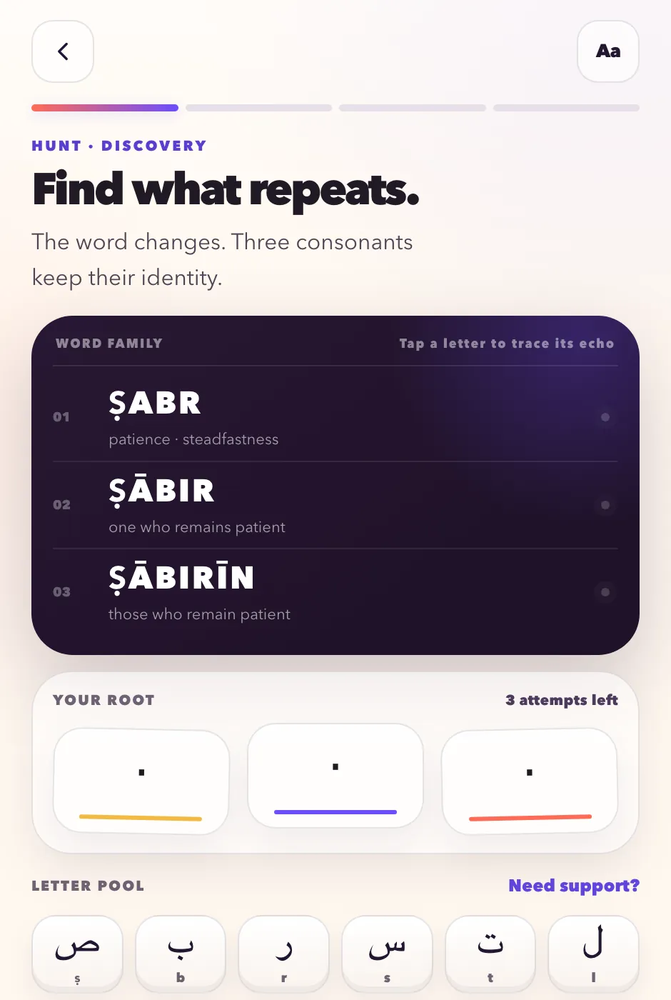
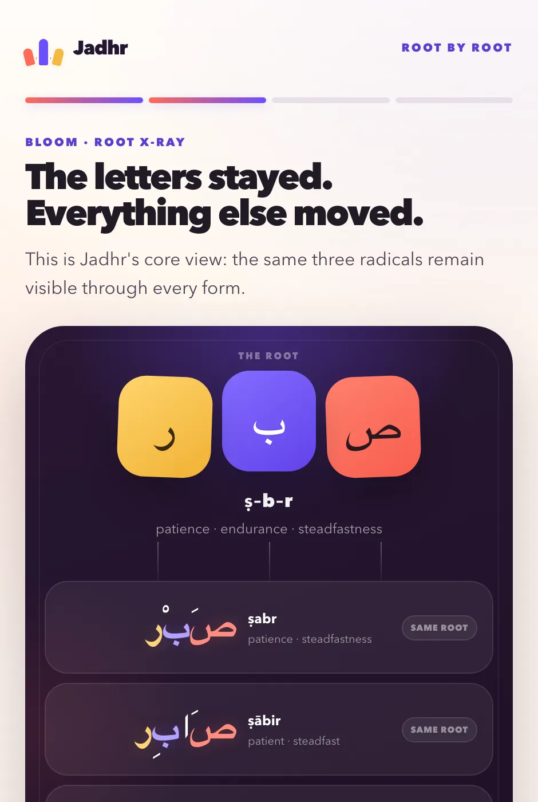

01
Hunt
You are shown a family of words that look nothing alike and mean nearly the same thing. Three consonants run through all of them. Find what repeats.

A daily Arabic root جذر
A one-minute daily puzzle, built on Arabic.
Almost every Arabic word grows from three consonants. Find them, and the root blooms into the whole family it built — ending at the āyah where it lives.
One root in your inbox every Friday, starting this week — then a note when the app opens, ahead of Ramadan. Nothing else, and no list sold to anyone.
Or skip the reading and play today's root no account, nothing to install
Day one · find what repeats 3 attempts
Three consonants run through all three words, in order. Tap them out.
Letter pool
The root
ṣ–b–r
patience · endurance · steadfastness
The letters stayed. Everything else moved.
That was the first move of one root. There are a hundred and three more, one a day — play today's in the app, or have one sent to you every Friday.
The minute
No lives, no energy bar, no reason to come back twice. It ends where it should end.
01
You are shown a family of words that look nothing alike and mean nearly the same thing. Three consonants run through all of them. Find what repeats.

02
The root you found lights up inside every word it made. Patience, the patient one, endurance, the command to endure — one skeleton, wearing different clothes.

03
Then the root goes home. You meet it where it actually lives — in the Qur'an, in Uthmani script, with the verse it belongs to. That is the payoff, and it is the reason the whole thing exists.
The root you just found, where it has always been
فَٱصْبِرْ صَبْرًا جَمِيلًا
“But be patient (O Muhammad) with a patience fair to see.”
Sūrat al-Maʿārij 70:5 · Pickthall
Why a root and not a word
English word games guess spellings. Arabic has something no other puzzle can borrow: a real, systematic skeleton underneath the vocabulary. Learn one root and you have not learned one word — you have been handed the key to a family of them, and to every other word built on the same pattern for the rest of your reading life.
That is also why it survives being copied. Anyone can clone a grid of tiles. The thing that makes Jadhr worth opening is the content underneath it — authored roots, real word families, and every verse matched against the Qur'anic corpus rather than picked from memory.
of every rooted word in the Qur'an is accounted for by the 105 roots drafted so far — 23,466 of 50,269. The destination is every playable root in the Book: 808 of them, 94% of every rooted word.
semantic fields, from Mercy and Light to Struggle and Dominion, so the roots you hold form a map rather than a list.
word forms written by hand, each one aligned letter by letter to the root inside it.
Thirty days
One shared puzzle a day, in order, beginning at صوم — fasting — and ending at كتب, the Book. Everyone on the same root on the same day, which is the only kind of streak worth having.
Written down before launch, so it can be held against us
Every one of these is a normal, profitable thing that daily games do. They are ruled out in the product spec, not in a blog post, because a Qur'anic word should never be the thing standing between you and a payment screen.
If Jadhr ever earns, it earns from tools for teachers, classes and masājid — the people who want more than a minute a day — while the daily puzzle stays whole and free for everyone else.
Where it honestly is
The app is real and runs end to end — hunt, bloom, verse, recall — on a rotation of 104 roots. What is not done is the review that lets it ship. Here is exactly how that works: every verse is machine-checked against two independently produced encodings of the Qur'an, every cited word is confirmed to carry its root, transliteration is generated under one declared scheme rather than typed by hand — and then a person approves every flagged root, a sample of every batch, and the whole Ramadan arc. The content is marked draft in the data itself until it passes. Reverence over speed.
Arabic text and morphology from the Quranic Arabic Corpus (Kais Dukes, University of Leeds), used under the GNU GPL. Translation by Marmaduke Pickthall, 1930, public domain. Both are credited on screen, on every verse.
Be first, honestly
The app is months from finished, and a list you hear nothing from for months is a list that has forgotten you. So it starts now: one root every Friday — the three letters, the family they build, the āyah they live in. Read in a minute, on the day it arrives.
When the app opens, ahead of Ramadan, you get one more note with a link in it. There is no launch sequence and no countdown, and unsubscribing takes one click.
Your address is stored to send you those roots and nothing else. It is never sold, never rented, and never handed to an advertiser — there is no advertiser.